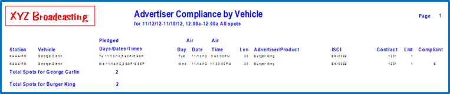
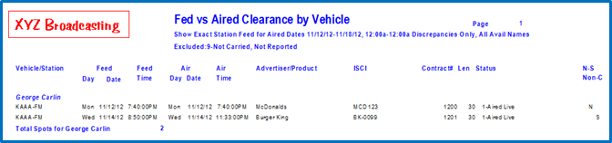
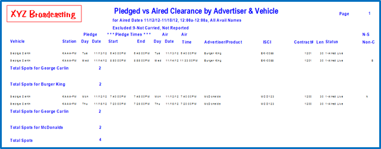
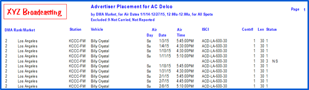
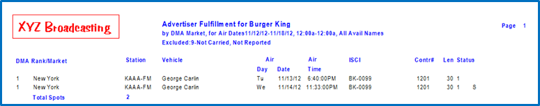
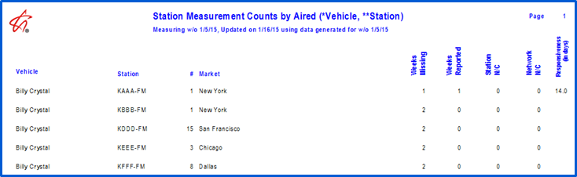
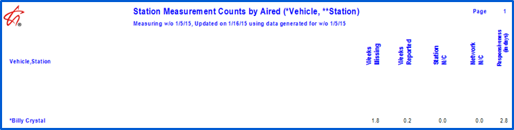

Network and Station Compliance
The Affiliate system offers a series of tools and reports to allow your network to audit spot compliance.
Counterpoint has two compliance flags: one for Network Compliance and one for Station Compliance.
Affiliate Spot Compliance Statuses
At the time of importing affidavits using the Counterpoint Affidavit system, or when an affidavit is manually posted in the Affiliate Affidavits screen, all affiliate spots get the Network Compliance and Station Compliance value set to either Yes or No depending on a hierarchy of rules the system uses to determine compliance.
These Compliant Statuses can be displayed on various affiliate spot reports.
Network and Station Compliance Hierarchy
To determine a spot’s Compliance or Non-Compliance, the system tests against a hierarchy of rules. When analyzing a spot to determine the Network and Station compliance, the system starts with rule one and continues to test each rule until it finds one that meets the spot’s criteria, then it sets the Network and Station Compliance flags accordingly.
- Pledge set as Not Carried is always Network and Station Compliant.
- If a spot is blacked out by another spot (regardless if it’s the spot that is doing the blacking out or not), it is always Network and Station Compliant.
- Fill spots that aired are Network and Station Compliant. Missed fill spots are Network compliant and Station Non-Compliant.
- Missed non-fill spots that were missed by the station are always Network and Station Non-Compliant.
- Makegood Spots that are made good by the Network are always Network and Station Compliant (regardless of where aired by station).
- Spots moved as Outsides by the Network are always Network and Station Compliant (regardless of where aired at the station).
- If none of the above rules have been met, the section is used to determine network compliance.
- Days: For weekly buys: any allowed ordered day
- Days: For daily buys: on ordered day only
- Dates: Standard broadcast billing cycle: within month
- Dates: Calendar or weekly billing cycle: within week
- Times: Daypart or override times from order
- Rule eight is used for setting the station compliance if none of the other above rules (1 through 6) have been met.
- Days: Live Pledge: Spot is on feed day
- Days: Delayed Pledge: Spot is within feed week
- Date: Spot is within pledge week
- Times: Spot is within pledge times
Set Compliance Utility
To set the compliance flags for affiliate spots created prior to Counterpoint Version 7.0, the Set Compliance utility must be run. The utility is found in File->Utilities->Set Compliance.
The Set Compliance utility uses the compliance hierarchy described above to determine network and station compliance.
Running the Utility
To run the utility, enter a date range, select the vehicles, then click Process. (The From date must use a Monday start date.)
You can run the utility for a date range as large as the amount of data you wish to convert - for example, the entire previous year - or if you have a large amount of data, you can use the date range to run the utility on a limited range of dates, such as for the last four months.
When finished, the Process button will change to Done, and a log file will be stored in the Data->Messages folder. The “Set Compliance” log will list everything that was converted, along with the processing time.
Affiliate Reports
There are five reports in the Affiliate system that displays a spot’s Network and Station Compliance Status.
Advertiser Compliance
This report designates Network Non-Compliant spots with an “N” and Station Non-Compliant spots with an “S” in the far right Compliant Column.

The report can be sorted by Advertiser, with an intermediate sort by station or vehicle, displaying one or multiple advertisers, vehicles, and stations, and can include/exclude non-reported stations.
If you chose to Show Days/Dates/Times As Sold, you can select the Non-Compliant Only Network spots option, which will only show Network Non-Compliant spots and bypass all Network Compliant spot. Likewise, if you Show Days/Dates/Times As Pledged, you can choose to display only Station Non-Compliant spots.
Fed vs. Aired
This report lists feed times from the network agreement and posted station aired times.

If you choose discrepancy only, it compares and lists any spots outside the feed date and time. Status Discrepancy will display any spots whose internal spot status is different from its internal pledged status.
Checking “Show Status Codes” will note Network Non-Compliant or Station Non-Compliant spots with an N(Network) or S(Station) in the far right column.
Pledged vs. Aired
This report lists and compares the agreement pledged times and days to the posted times and dates for the selected time period.

Showing spot status codes allows you to analyze how the spots were aired: live, delayed, not aired due to technical difficulties, or blackouts, and will also indicate Network Non-Compliant and Station Non-Compliant spots with an N(Network) or S(Station) in the far right column.
Advertiser Placement
The Advertiser Placement report offers a quick, detailed listing of aired information for selected or all advertisers. The report bypasses normal routines, increasing its processing speed.

Aired dates/times (as opposed to feed dates/times), along with the spot length and copy are displayed. Regional copy can be highlighted, or spots without regional copy can be excluded.
Spot status codes can optionally be shown, as well as station counts, and stations not yet reported. If Status Codes are shown, Network Non-Compliant and Station Non-Compliant Statuses will also be indicated with an N(Network) or S(Station) in the far right column.
Advertiser Fulfillment
The Advertiser Fulfillment report gives your client a listing of where and when the affiliates aired their spots, showing the aired dates/times, along with the spot length and copy.

Spot status codes can optionally be shown, as well as station counts, and stations not yet reported.
If Status Codes are shown, Network and Station Non-Compliant Statuses will be indicated with an N(Network) or S(Station) in the far right column.
Affiliate Measurement Report
The Affiliate Measurement report is used to measure affiliate compliance and delinquent rates. The report displays the measurement figures obtained in the current week the utility was generated in, for the date requested.
The report follows formulas on this grid to arrive at its figures:
|
Report Options Report Columns |
Counts by Aired |
Percent (Pct) by Aired |
Percent (Pct) by Year |
|
Weeks Missing |
# of weeks Missing |
# of weeks missing / # of weeks aired |
# of weeks missing / 52 weeks |
|
Weeks Reported |
# of weeks aired - # of weeks missing |
# of weeks aired - # of weeks missing / # of weeks aired |
52weeks - # of weeks missing / 52 |
|
Station Non-Compliant |
# of Station Non-Compliant spots posted |
# Station Non-Compliant spots posted /total # of spots posted |
# of Station Non-Compliant spots posted /total # spots posted |
|
Network Non-Compliant |
# Network Non-Compliant spots posted |
# Network Non-Compliant spots posted / total # of spots posted |
# Network Non-Compliant spots posted / total # spots posted |
|
Responsiveness |
# of weeks aired x 7/ # unique days submitted |
# of weeks aired x 7/ # unique days submitted (no percent) |
# of weeks aired x 7/# unique days submitted (no percent) |
Information can be displayed by aired counts (# of weeks, # of spots, etc.) or by year or aired percentages (aired percentages are arrived at by dividing the six measurement values by the number of aired spots and year percentages are arrived at by dividing the six values by 52).
There are optional major and minor sorts, which can include applicable page skips, minor sorts can be sorted in ascending or descending order. You can choose to run the report in a detail or summary version, and decide whether to include or exclude Network Non-Compliant Station, and/or Responsiveness in the calculations, as well as whether to display internal counts stored in the Affiliate Measurement file.
This example shows the detailed Counts by Aired, breaking out information by station:

This example shows the Summary version, which shows one line of information per vehicle:
